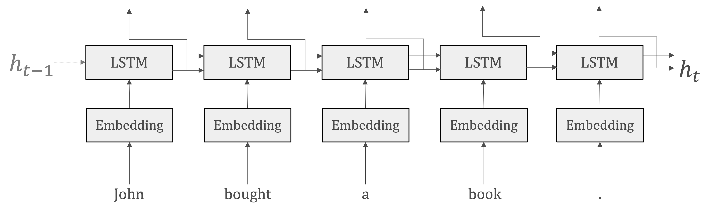
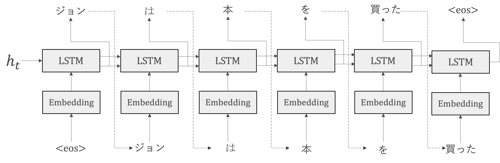
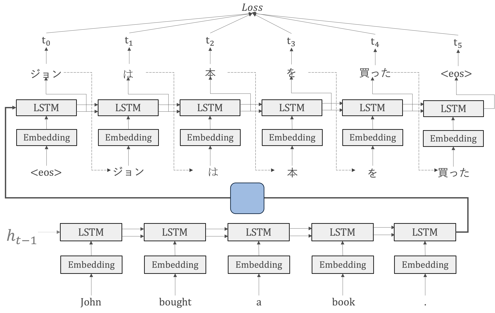

Seq2seq#
自然言語処理に関するタスクは、言語の時系列データを別の時系列データに変換するような問題として定式化することができます。
機械通訳のタスクでは、ある言語の文章（入力時系列データ）を別の言語の文章（出力時系列データ）に変換します。
要約のタスクでは、長いテキスト（入力時系列データ）を短い要約文（出力時系列データ）に変換します。
このように、自然言語処理の多くのタスクは、時間的に順序付けられたデータを取り扱い、それを新しい形式の順序付けられたデータに変換するプロセスとして捉えることができます。このプロセスは、データの時系列的な性質と言語の構造的な特徴を考慮に入れる必要があります。そのためのモデルは、seq2seqと呼ばれます。
seq2seqの原理#
seq2seq(Sequence-to-Sequence)はEncoder-Decoderモデルとも呼ばれます。その名前が示す通り、そこには2つのモジュールーEncoderとDecoderーから構成されています。
エンコードとは、情報をある規則に基づいて変換することを指しています。具体的には、入力シーケンスを取り込み、それを固定長の内部表現（通常はベクトル）に変換することです。この内部表現には、入力シーケンスの重要な情報がコンパクトにまとめられています。
デコードは、エンコーダーから受け取った特徴ベクトルを基に、目的の出力シーケンスを生成します。この過程で、デコーダーはエンコーダーが提供した情報を「解釈」し、それに基づいて適切な出力を生成するための処理を行います。
{kind=link}
Note
機械翻訳の歴史
機械翻訳（Machine Translation：MT）は計算機科学の黎明期から長きにわたって取り組まれてきた伝統的な課題であり，自然言語処理研究の発展を牽引しています。
ルールベース
1950年代から本格的な研究が始められました。当時は、翻訳先の言語の文法規則にもとづくルールベース機械翻訳が使われていました。膨大なルールを作り込む必要があり、開発にも新語のアップデートにも手間がかかりました。精度は高くなく、主に定型的な文しか翻訳できませんでした。
統計的機械翻訳（Statistical Machine Translation、SMT）
1980年代になると、さらに統計的機械翻訳が生み出されました。統計的機械翻訳では、人の代わりにコンピュータがルールを学びます。原文と訳文のペアを大量に読み込み、原文の単語やフレーズが訳文の特定の単語やフレーズに変換される確率を計算することで、特定の言葉や表現がどのように翻訳されるかを学習します。
ただし、この手法は、文法構造や言語の深い理解に基づく翻訳を生成することが難しいことがあります。そのため、十分な並列コーパスがない場合や、文法構造が大きく異なる言語ペアに対しては性能が低下することがあります。結果として、翻訳されたテキストには文法的な不正確さや不自然さが生じることがあります。
SMTでは原言語の部分単語列を目的言語の句に翻訳し，それを適当な順序に並べ替えるという構成になっています。そのため、句の翻訳モデル，句の並べ替えモデル，出力文の言語モデルを用いて、膨大な翻訳結果候補の中からスコアが最大になるものを探索することになります
ニューラル翻訳(Neural Machine Translation, NMT)
機械翻訳が大きな進展を迎えたのは2014年のseq2seqモデルの登場でした。seq2seqでは単語列をRNNに入力した後RNNに単語列を出力させる，という極めて単純な仕組みで機械翻訳が実現できるという可能性を示しました。
SMTが単語や句の単位で翻訳したものを組み合わせて翻訳文を構成しようとするのに対し，NMT はそのように明示的な要素の組合せを考慮する必要がなく、正しい翻訳結果が出力されるようにニューラルネットワークを学習します。
NMTにおいては単語や文はベクトルとして多次元連続空間に埋め込まれて処理され，ある出力単語はそれ以前の処理すべての結果を踏まえて選択されるため，具体的にどの入力単語と対応することを考慮する必要がありません。
RNNによるseq2seq#
EncoderとDecoderにはRNNを使うことができます。
EncoderはRNNを利用して、時系列データを\(h\)という隠れ状態ベクトルに変換します。つまり、Encoderの出力は、RNNレイヤの最後の隠れ状態です。
情報の集約：最後の隠れ状態\(h\)に、入力シーケンスの全ての要素から抽出された情報を集約しています。これにより、タスク（ここは機械通訳）を完成するために必要な情報がエンコードされます。
固定長の表現：RNNによって生成される\(h\)は固定長のベクトルです。エンコードするとは、任意の長さの文章を固定長のベクトルに変換することなのです。

DecoderもRNN利用して、Decoderの役割は、単純にvector-to-sequence RNNであり、Encoderから受け取った固定長の隠れ状態\(h\)を使用して、目的の出力シーケンスを生成することです。
出力シーケンスの生成: Decoderは、Encoderから受け取った隠れ状態を初期状態として利用し、出力シーケンス（例えば翻訳されたテキスト）を一つずつ生成します。
ただし、\(s_0=h_t\)

Note
ここで、
このような特定の意味を持つために設計された特別な単語またはシンボルは、特殊トークンといいます。これらは通常、モデルがテキストデータを理解し、適切に処理するのを助けるために使用されます。
<PAD>: パディングトークン。シーケンスの長さを揃えるために使用されます。一般的には、最も長いシーケンスに合わせて他のシーケンスをパディングします。<SOS>または<BOS>: シーケンスの開始トークン。シーケンスの開始を示します。これは、特にシーケンス生成タスク（例：機械翻訳）で重要です。<EOS>または<EOT>: シーケンスの終了トークン。シーケンスの終了を示します。これも、シーケンス生成タスクで重要です。<UNK>: 未知トークン。語彙に存在しない単語を表します。これは、モデルが未知の単語に遭遇したときに使用されます。<CLS>: 主に分類タスクで使用され、入力の最初に配置されます。このトークンの隠れ状態は、しばしば文全体の表現として使用されます。
これらの特殊トークンは、モデルがテキストの構造を理解するのを助け、特定のタスク（例えば、シーケンス生成やテキスト分類）を適切に実行するために必要です。
一般的には、テキストデータを前処理し、トークン化する際にこれらの特殊トークンを適切に挿入または使用します。
まとめると、RNNによるseq2seqは二つのRNN ー EncoderのRNNとDecoderのRNN ー によって構成されます。この時、RNNレイヤの隠れ状態がEncoderとDecoderの「架け橋」となります。
seq2seqの革新的な点は、入力と出力系列の長さ\(n_x\)と\(n_y\)について\(n_x=n_y\)という制約に対して、seq2seqにおいて\(n_x\)と\(n_y\)が違っても構わないという点です。
順伝播では、EncoderからDecoderへンコードされた情報がRNNレイヤの隠れ状態を通じて伝わります。そして、seq2seqの逆伝播では、その「架け橋」を通って、勾配がDecoderからEncoderへ伝わります。

seq2seqの汎用性#
seq2seqの構造によって、任意の系列データを扱うことが可能になります。系列にモデル化できるのであれば、文章、音声、ビデオなどを含めて、異なる種類のデータやタスクに適応することができます。
チャットボット: ユーザーの質問やコメント（入力系列）に対して適切な応答（出力系列）を生成するために使用されます。
音声認識: 音声の波形（入力系列）をテキストの形式（出力系列）に変換します。
要約システム: 長いテキスト（入力系列）を短い要約文（出力系列）に変換するために使用されます。
画像キャプション: 画像（入力系列）を解説するテキスト（出力系列）に変換します。
Pytorchによるseq2seqの実装#
import torch
import torch.nn as nn
Encoderの実装#
seq2seqモデルのEncoder部分を定義します。
初期化
self.hidden_dimとself.n_layersは、LSTMレイヤーの隠れ層の次元数とレイヤー数を定義します。self.embeddingは、入力データを埋め込むための埋め込みレイヤーを定義します。このレイヤーは、入力データを低次元の密なベクトルに変換します。この埋め込みレイヤーは、入力次元数と埋め込み次元数を引数に取ります。self.rnnは、LSTMレイヤーを定義します。このレイヤーは、埋め込みレイヤーからの出力を受け取り、隠れ状態とセル状態を更新します。このLSTMレイヤーは、埋め込み次元数、隠れ層の次元数、レイヤー数、そしてドロップアウト率を引数に取ります。self.dropoutは、ドロップアウトレイヤーを定義します。このレイヤーは、過学習を防ぐために訓練中にランダムにノードを無効にします。
forward入力テキスト(
src)は埋め込みレイヤーself.embeddingを通過し、その結果得られる埋め込みはself.dropoutで調整されます。Dropoutを適用した埋め込みがLSTMレイヤーを通過し、出力として隠れ状態とセル状態が生成されます。
このエンコーダークラスは、ソーステキストを入力として受け取り、それを一連の隠れ状態とセル状態に変換します。これらの状態は、次にデコーダーに渡され、ターゲットテキストの生成に使用されます。
class Encoder(nn.Module):
def __init__(self, input_dim, embedding_dim, hidden_dim, n_layers, dropout):
super().__init__()
self.hidden_dim = hidden_dim
self.n_layers = n_layers
self.embedding = nn.Embedding(input_dim, embedding_dim)
self.rnn = nn.LSTM(embedding_dim, hidden_dim, n_layers, dropout=dropout)
self.dropout = nn.Dropout(dropout)
def forward(self, src):
# src = [src length, batch size]
embedded = self.dropout(self.embedding(src))
# embedded = [src length, batch size, embedding dim]
outputs, (hidden, cell) = self.rnn(embedded)
# outputs = [src length, batch size, hidden dim * n directions]
# hidden = [n layers * n directions, batch size, hidden dim]
# cell = [n layers * n directions, batch size, hidden dim]
# outputs are always from the top hidden layer
return hidden, cell
Decoderの実装#
seq2seqモデルのDecoder部分を定義しています。
初期化
self.output_dimは、出力の次元数を保存します。これは通常、ターゲット語彙のサイズに対応します。self.hidden_dimとself.n_layersは、LSTMレイヤーの隠れ層の次元数とレイヤー数を保存します。self.embeddingは、入力データを埋め込むための埋め込みレイヤーを定義します。このレイヤーは、入力データを低次元の密なベクトルに変換します。この埋め込みレイヤーは、出力次元数と埋め込み次元数を引数に取ります。self.rnnは、LSTMレイヤーを定義します。このレイヤーは、埋め込みレイヤーからの出力を受け取り、隠れ状態とセル状態を更新します。このLSTMレイヤーは、埋め込み次元数、隠れ層の次元数、レイヤー数、そしてドロップアウト率を引数に取ります。self.dropoutは、ドロップアウトレイヤーを定義します。このレイヤーは、過学習を防ぐために訓練中にランダムにノードを無効にします。self.fc_outは、全結合レイヤーを定義します。このレイヤーは、LSTMレイヤーからの出力を受け取り、最終的な出力を生成します。この全結合レイヤーは、隠れ層の次元数と出力次元数を引数に取ります。
forward：入力トークンのバッチ、前の隠れ状態、前のセル状態を受け入れます。Decoderは一度に一つのトークンしか処理しないため、入力トークンは、次元を追加するために
unsqueezeメソッドを使用して変形されます。これにより、入力の形状は[1, バッチサイズ]になります。変形した入力は、埋め込みレイヤーを通過し、その結果得られる埋め込みはドロップアウトレイヤーを通過します。
ドロップアウトを適用した埋め込みは、前の隠れ状態とセル状態と共に、LSTMレイヤーを通過し、新しい隠れ状態とセル状態を生成します。その中に、
outputは各タイムステップの隠れ状態になります。outputを線形層に通してpredictionを受け取ります。
このデコーダークラスは、入力トークン、隠れ状態、およびセル状態を入力として受け取り、次のトークンの予測、新しい隠れ状態、および新しいセル状態を出力します。
class Decoder(nn.Module):
def __init__(self, output_dim, embedding_dim, hidden_dim, n_layers, dropout):
super().__init__()
self.output_dim = output_dim
self.hidden_dim = hidden_dim
self.n_layers = n_layers
self.embedding = nn.Embedding(output_dim, embedding_dim)
self.rnn = nn.LSTM(embedding_dim, hidden_dim, n_layers, dropout=dropout)
self.fc_out = nn.Linear(hidden_dim, output_dim)
self.dropout = nn.Dropout(dropout)
def forward(self, input, hidden, cell):
# input = [batch size]
# hidden = [n layers * n directions, batch size, hidden dim]
# cell = [n layers * n directions, batch size, hidden dim]
# n directions in the decoder will both always be 1, therefore:
# hidden = [n layers, batch size, hidden dim]
# context = [n layers, batch size, hidden dim]
input = input.unsqueeze(0)
# input = [1, batch size]
embedded = self.dropout(self.embedding(input))
# embedded = [1, batch size, embedding dim]
output, (hidden, cell) = self.rnn(embedded, (hidden, cell))
# output = [seq length, batch size, hidden dim * n directions]
# hidden = [n layers * n directions, batch size, hidden dim]
# cell = [n layers * n directions, batch size, hidden dim]
# seq length and n directions will always be 1 in this decoder, therefore:
# output = [1, batch size, hidden dim]
# hidden = [n layers, batch size, hidden dim]
# cell = [n layers, batch size, hidden dim]
prediction = self.fc_out(output.squeeze(0))
# prediction = [batch size, output dim]
return prediction, hidden, cell
seq2seqの実装#
Seq2Seqモデルは、Encoder、Decoder、およびdevice（GPU上でテンソルを配置するために使用）を引数として取ります。
入力（
src）とターゲット（trg）のシーケンスを引数として受け取ります。src: 入力シーケンス。これはエンコーダに供給され、情報を抽出し、その情報をデコーダに渡すために使用されます。trg: ターゲットシーケンス。これはデコーダに供給され、訓練中は正解の出力シーケンスとして使用されます。
デコーダの出力を格納するためのテンソル（
outputs）を作成します。このテンソルは、ターゲットシーケンスの長さ、バッチサイズ、およびターゲット語彙のサイズ（デコーダの出力次元）と同じ形状を持ちます。エンコーダは入力シーケンスを受け取り、最後の隠れ状態とセル状態を出力します。これらの状態は、デコーダの初期状態として使用されます。
デコーダは、最初に
<sos>（シーケンスの開始）トークンを入力として受け取ります(ここで、前処理の際既に<sos>トークンが追加されていると想定しています)。その後、ターゲットシーケンスの各トークンに対して、前の隠れ状態とセル状態を入力として受け取り、新しい出力（予測）、隠れ状態、およびセル状態を生成します。各タイムステップで、モデルは前のタイムステップで予測したトークンを次の入力として使用します。これは、モデルが実際にデプロイされている場合の動作により近いです。
最後に、デコーダのすべての出力を含むテンソルが返されます。これは、ターゲットシーケンスの各トークンに対するモデルの予測を表します。
class Seq2Seq(nn.Module):
def __init__(self, encoder, decoder, device):
super().__init__()
self.encoder = encoder
self.decoder = decoder
self.device = device
assert encoder.hidden_dim == decoder.hidden_dim, \
"Hidden dimensions of encoder and decoder must be equal!"
assert encoder.n_layers == decoder.n_layers, \
"Encoder and decoder must have equal number of layers!"
def forward(self, src, trg):
# src = [src length, batch size]
# trg = [trg length, batch size]
batch_size = trg.shape[1]
trg_length = trg.shape[0]
trg_vocab_size = self.decoder.output_dim
# tensor to store decoder outputs
outputs = torch.zeros(trg_length, batch_size, trg_vocab_size).to(self.device)
# last hidden state of the encoder is used as the initial hidden state of the decoder
hidden, cell = self.encoder(src)
# hidden = [n layers * n directions, batch size, hidden dim]
# cell = [n layers * n directions, batch size, hidden dim]
# first input to the decoder is the <sos> tokens
input = trg[0,:]
# input = [batch size]
for t in range(1, trg_length):
# insert input token embedding, previous hidden and previous cell states
# receive output tensor (predictions) and new hidden and cell states
output, hidden, cell = self.decoder(input, hidden, cell)
# output = [batch size, output dim]
# hidden = [n layers, batch size, hidden dim]
# cell = [n layers, batch size, hidden dim]
# place predictions in a tensor holding predictions for each token
outputs[t] = output
# get the highest predicted token from our predictions
top1 = output.argmax(1)
# use predicted token as next input
input = top1
# input = [batch size]
return outputs